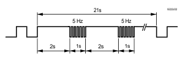

技术和机械设计
该设备可以安装在标准导轨上或墙壁上。
| 1 | 塑料外壳 |
2 | LEDs 用于通信和状态 | |
3 | 服务按钮 | |
4a) | 每个端口有 2 个 LEDs 的 2 端口以太网交换机 | |
4 b) | 不支持 | |
5 | 带螺钉端子的插入式接线端子 | |
6 | 不支持 | |
7 | 不支持 | |
8 | 不支持 | |
9 | 用于安装在标准安装导轨上的滑块 | |
10 | 扎带孔眼 | |
11 | 墙壁安装孔 | |
12 | 日期/系列和序列号 |

LED indicators and service pin
活动 | LED / Interface | 颜色 | 活动 | 功能 |
|---|---|---|---|---|
| 以太网 1...2 | 绿色的 | 连续ON | 链接有效 |
黄色的 | 连续ON | 链路100Mbps | ||
| RUN | 绿色的 | 连续ON | 设备运行 |
红色的 | 连续OFF | OK | ||
| 蓝色的 | Steady ON | Cloud connection OK | |
SVC | 红色的 | 连续OFF | OK | |
每次眨眼命令闪烁 | 收到 wink 命令后识别设备 | |||
 | ||||
COM1 / 2 TX | 黄色的 | 连续OFF | 功能不支持 | |
COM1 / 2 RX | 黄色的 | |||
| 服务按钮 |
| 短按 | 网络上的身份识别 |
根据描述： | 执行以下操作将设备重置为出厂状态：
| |||